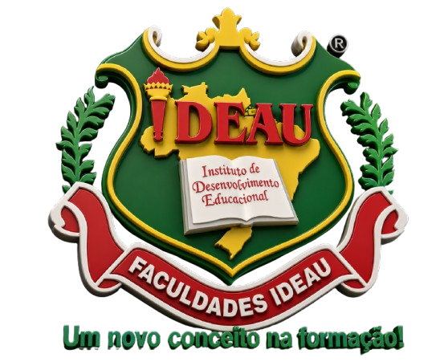

Comunidade
Pais, alunos e cidadãos indicam educadores e projetos por formulário online.

Prêmio IDEAU Educação 2026Bagé e Região da Campanha
Uma noite para reconhecer quem transforma vidas pelo conhecimento, pela inclusão, pela inovação e pelo prazer de aprender.
O prêmio nasce para dar palco a educadores, escolas, centros culturais e iniciativas que mudam a realidade por meio do conhecimento. Em 2026, o foco inicial é reconhecer trajetórias e projetos com presença viva na comunidade.
A edição piloto olha para o legado, o engajamento, o uso ético da tecnologia e a inclusão como caminhos concretos para construir o futuro da aprendizagem.
Inscrição direta ao júri
Pais, alunos e cidadãos indicam educadores e projetos por formulário online.
Escolas e centros culturais apresentam seus destaques e boas práticas.
Profissionais submetem portfólios e projetos para avaliação técnica.
Categorias
01
Educador(a) com trajetória histórica de dedicação à educação.
O que se busca: trajetória, dedicação, serviço e inspiração.Comissão de notáveis
A avaliação pode reunir professores da IDEAU, representantes das secretarias municipal e estadual de educação, uma referência cultural de Bagé e um especialista convidado em inovação ou inteligência artificial.
Premiação
Um troféu com a marca IDEAU e conexão com a memória educacional da cidade.
Bolsa integral de Pós-Graduação ou MBA na IDEAU para vencedores individuais.
Selo institucional para escolas que demonstram práticas transformadoras.
Viagem cultural ou visita técnica para troca de boas práticas educacionais.
Incentivo à escola vencedora para tablets, softwares e recursos digitais.
Relatos de experiência documentados para inspirar outras escolas da região.
Cronograma piloto
Lançamento oficial em 24 de agosto, com divulgação do prêmio e abertura do formulário digital.
Inscrições abertas
Registre a inscrição ou indicação com nome, categoria e motivo. A submissão fica pronta para ser encaminhada à equipe avaliadora.